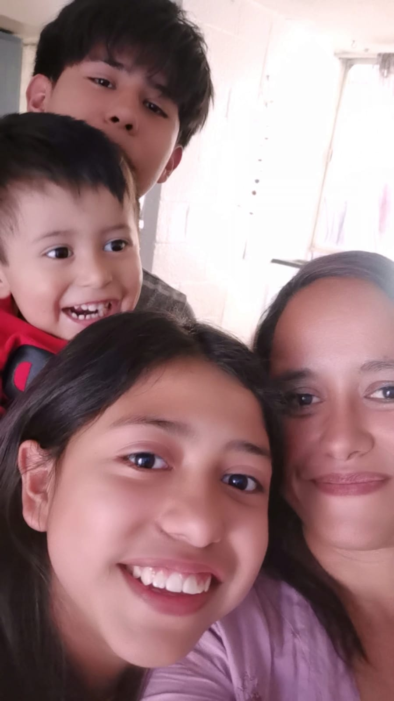

Mi es unidad aun que no nos veamos tanto a mi padre lo veo únicamente fines de semana o en vacaciones que prefiero pasarlas en su casa mientras que la familia de mi madre la veo muy seguido a pesar de todo lo que haya pasado mi familia sigue muy unida, hacen lo posible por apoyarnos a mi como a mis hermanos y mis hermanos lo mismo con mis padres por lo que podría decir que estoy feliz con mi familia por que entienden lo que necesito y me apoyan en eso lo cual me hace sentir bien, esta conformada por mi madre, padre, dos hermanos( Yamile(11) y Adriel(3)) y yo Ezequiel
